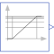

LogFrequencySweepLogarithmic frequency sweep |

|
Information
This information is part of the Modelica Standard Library maintained by the Modelica Association.
The output y performs a logarithmic frequency sweep.
The logarithm of frequency w performs a linear ramp from log10(wMin) to log10(wMax).
The output is the decimal power of this logarithmic ramp.
For time < startTime the output is equal to wMin.
For time > startTime+duration the output is equal to wMax.
Parameters (4)
Connectors (1)
| y |
Type: RealOutput Description: Connector of Real output signal |
|---|
Used in Examples (2)
|
Modelica.ComplexBlocks.Examples
Test Complex Transfer Function Block |
|
|
Modelica.Electrical.QuasiStationary.SinglePhase.Examples
Series circuit with Bode analysis |
Used in Components (4)
|
Modelica.Electrical.QuasiStationary.SinglePhase.Sources
Voltage source with integrated frequency sweep |
|
|
Modelica.Electrical.QuasiStationary.SinglePhase.Sources
Current source with integrated frequency sweep |
|
|
Modelica.Electrical.QuasiStationary.MultiPhase.Sources
Voltage source with integrated frequency sweep |
|
|
Modelica.Electrical.QuasiStationary.MultiPhase.Sources
Current source with integrated frequency sweep |